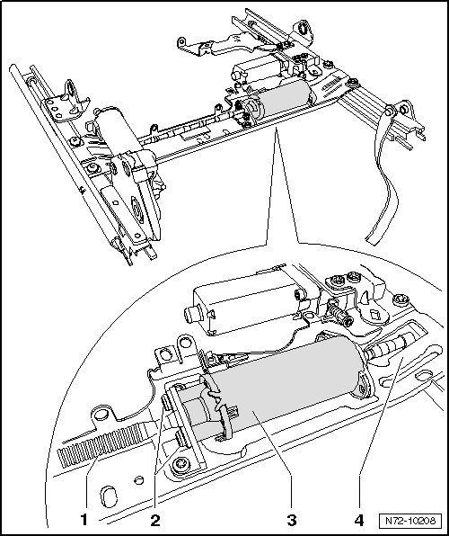

Front Seat Longitudinal Adjustment Drive Motor
Front Seats
Front Seat Longitudinal Adjustment Drive Motor
Removing
- Remove belt anchor --> [ Belt Anchor ] Belt Anchor
- Position seat as far up as possible using height adjustment.
- Remove 12-way seat --> [ Front Seat ] Front Seat
- Mount the fixture for seat repair (VAS 6136) on the engine and transmission holder (VAS 6095).
- Secure 12-way seat on fixture for seat repair (VAS 6136).
- Remove front seat trim --> [ Front Seat Trim ] Front Seat Trim
- Remove belt buckle --> [ Front Belt Buckle ] Front Belt Buckle
- Remove front seat control module --> [ Front Seat Control Module ]. Front Seat Control Module
- Remove seat longitudinal adjuster --> [ Front Seat Longitudinal Adjustment ]. Front Seat Longitudinal Adjustment
- Pull the shaft - 1 - out from the drive motor - 3 -.
- Remove the two bolts - 2 - (2 Nm).
- Remove drive motor from seat longitudinal adjuster - 4 -.

Installing
- Perform the steps used for removal in reverse order.